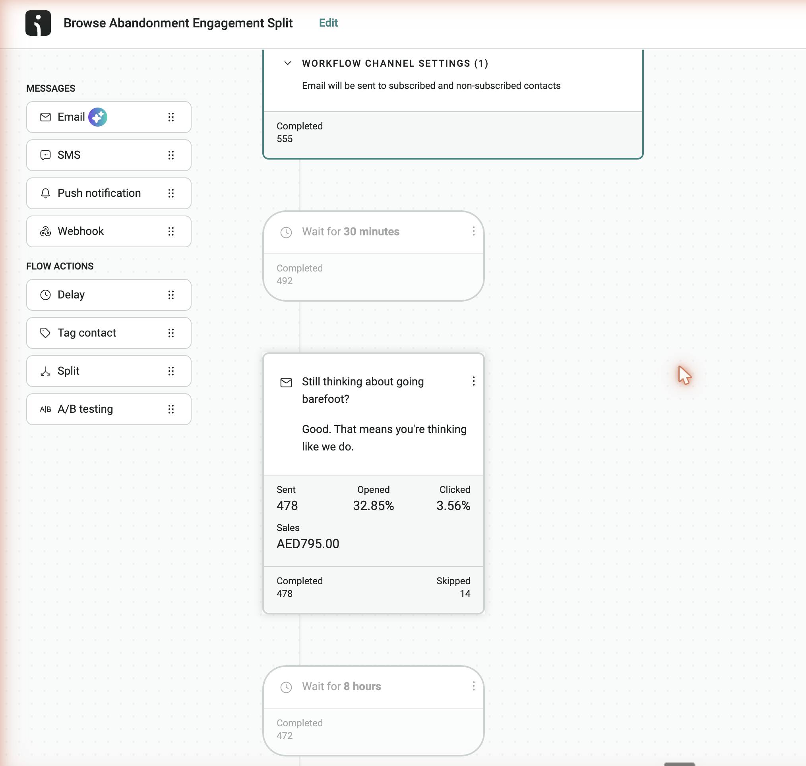
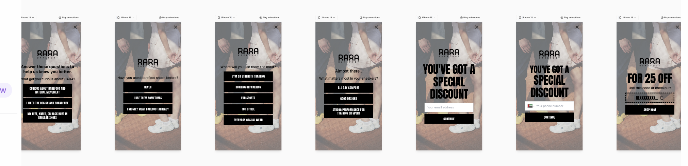
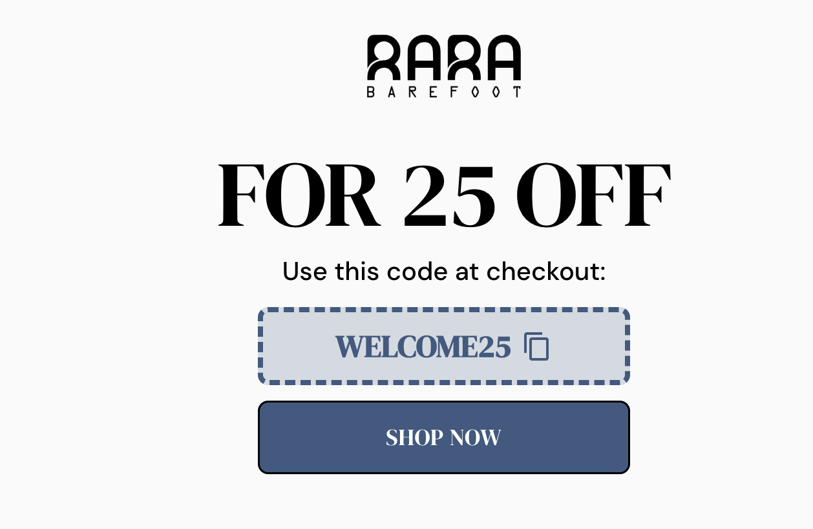

Retention overview
Internal audit. OmniSend API (live) · OmniSend performance exports · Shopify UAE orders · Alia analytics. Every number cross-checked.
The one-line verdict: this account is built right and starved of volume. Every automation has the correct entry trigger, the emails are beautifully designed, the content is good, and January's domain warm-up was done properly. Email already drives 26.4% of store revenue and the repeat rate is 23.6% at nine months old. The constraint is the list: 2,324 people. Growing it is the one plan; everything else compounds from there.
The backbone
list matched against orders by emailMonth on month: store and email
store from Shopify orders; email attribution from OmniSend| Month | Orders | Store revenue AED | Flow revenue AED | Repeat share of orders |
|---|---|---|---|---|
| Feb | 41 | 17,618 | export starts Apr | 37% |
| Mar | 23 | 12,527 | export starts Apr | 35% |
| Apr | 38 | 21,798 | 2,758 | 16% |
| May | 63 | 26,012 | 4,640 | 22% |
| Jun | 95 | 31,413 | 7,535 | 23% |
| Jul (16 days) | 89 | 25,927 | month open | 31% |
H1 email attribution: automations AED 33,298 (84 orders) + campaigns AED 3,402 (10 orders) = AED 36,700 on AED 139,115 store revenue. Flows carry 91% of email revenue. Channel is email only: no SMS anywhere, though the popup collects phone numbers.
What is genuinely good here
- All six core flows are live with the correct entry triggers: Welcome on subscribe, Browse on product view, Cart on add to cart, Checkout on checkout start, Post Purchase on order.
- The emails are beautifully designed and the education content is strong. January was a proper 12-send domain warm-up.
- Alia runs a real A/B holdout (popup vs no popup), so incrementality is measurable.
- Repeat rate 23.6% at nine months; July repeat share of orders hit 31%. The store is inflecting.
Deep analysis
Cohorts from the full UAE order history (Nov 2025 to Jul 16, 2026), voided excluded, customer key = email.
Where the retention is: first product → % who buy again
every customer classified by their first order| First order | First-buyers | Buy again |
|---|---|---|
| XANADU | 109 | 26.6% |
| URUK | 108 | 23.1% |
| ZANZIBAR | 55 | 18.2% |
| Two pairs in the first order | 12 | 25.0% |
Cross-sell / up-sell map: what repeat buyers buy next
1st order → 2nd order, by silhouette (67 repeat customers). Hover a ribbon.| Top paths (1st → 2nd) | Customers | Type |
|---|---|---|
| XANADU → XANADU | 20 | second pair, same silhouette |
| URUK → URUK | 18 | second pair, same silhouette |
| ZANZIBAR → ZANZIBAR | 7 | second pair, same silhouette |
| XANADU → URUK | 5 | cross-sell |
| URUK → XANADU | 5 | cross-sell |
| XANADU → ZANZIBAR | 4 | cross-sell |
Cohorts: % placing a 2nd order within 30 / 60 / 90 days
by first-order month| First-order month | Cohort | by 30d | by 60d | by 90d |
|---|---|---|---|---|
| Jan 2026 | 19 | 26.3% | 26.3% | 26.3% |
| Feb | 26 | 19.2% | 23.1% | 23.1% |
| Mar | 15 | 26.7% | 26.7% | 26.7% |
| Apr | 32 | 15.6% | 25.0% | 28.1% |
| May | 49 | 20.4% | 22.4% | not 90d old |
| Jun | 73 | 15.1% | not 60d old | not 90d old |
| Jul (16 days) | 61 | 21.3% already | open | open |
The pattern that matters: almost all repeat happens inside the first 30 days (the 60 and 90 day columns barely add), and the median gap is 3 days. The second order decision is made in the first two weeks of ownership. That is exactly the window the Post Purchase flow and the 14-day Challenge own: activation content in week one and two is where repeat is won or lost. Nov and Dec 2025 cohorts (9 customers) are left out for size.
First, second and third orders, month on month
| Month | 1st orders | 2nd orders | 3rd+ orders | Revenue AED | Repeat share |
|---|---|---|---|---|---|
| Jan | 19 | 6 | 0 | 3,820 | 24% |
| Feb | 26 | 6 | 9 | 17,618 | 37% |
| Mar | 15 | 5 | 3 | 12,527 | 35% |
| Apr | 32 | 4 | 2 | 21,798 | 16% |
| May | 49 | 12 | 2 | 26,012 | 22% |
| Jun | 73 | 14 | 8 | 31,413 | 23% |
| Jul (16d) | 61 | 18 | 10 | 25,927 | 31% |
Second and third orders are arriving faster each month (Jul: 28 repeat orders in 16 days). Acquisition is scaling and the repeat layer is forming behind it. Lifetime distribution: 1x 217 · 2x 46 · 3x 11 · 4+ 10.
Automation
Per flow, per month, per message. June is the decision month. Sources: OmniSend workflow exports + H1 performance report + API.
Per-flow tracker, month on month
sent · orders · revenue AED. June highlighted.| Flow | Apr | May | Jun | H1 total |
|---|---|---|---|---|
| Post Purchase | 20 s · 2 o · 1,198 | 171 · 3 · 1,397 | 341 · 7 · 2,471 | 813 s · 32 o · 12,119 |
| Welcome | 386 · 0 · 0 | 491 · 0 · 0 | 958 · 7 · 2,047 | 2,838 · 14 · 3,494 |
| Abandoned Checkout | 213 · 1 · 549 | 151 · 3 · 1,597 | 289 · 4 · 1,522 | 1,138 · 12 · 5,477 |
| Browse Abandonment | 862 · 0 · 0 | 539 · 2 · 848 | 742 · 4 · 1,196 | 3,463 · 12 · 4,411 |
| Cart Men | 134 · 0 · 0 | 140 · 2 · 798 | 105 · 1 · 299 | 516 · 3 · 1,097 |
| Cart Women | 37 · 0 · 0 | 34 · 0 · 0 | 47 · 0 · 0 | 164 · 0 · 0 |
| Challenge set (killed ~May 1) | 1,118 · 2 · 1,011 | 0 | 0 | 14-day Challenge: 212 · 8 · 5,241 |
Every flow's volume scaled with Alia (welcome sends 386 to 958 in two months). June flow revenue AED 7,535 on a 31.4K store month.
Do people reach the last email? Yes. Does it earn? No.
welcome flow, per message| Month | Email 1 | Email 2 | Email 3 | Reach E3 | Revenue split E1 / E2 / E3 |
|---|---|---|---|---|---|
| Apr | 138 | 129 | 119 | 86% | 0 / 0 / 0 |
| May | 167 | 161 | 163 | 98% | 0 / 0 / 0 |
| Jun | 351 | 313 | 294 | 84% | 1,748 / 299 / 0 |
No dead nodes in the account: every email in every live flow sends (Cart Men in June: 28, 27, 25, 25). The real issue is volume: by the last message of a recovery flow, very few people are left to receive it, and welcome revenue concentrates in email 1 while the later emails engage without selling. The offer is not visible in the flow and the WELCOME25 code has no expiry.
Flow verdicts
what to change, flow by flow| Flow | What we found | The fix |
|---|---|---|
| Welcome | Good flow, but the offer is invisible: June revenue sits in email 1 and the code has no expiry. | Make the offer the hero of every email with a dynamic code and expiry. A/B content heavily: this is the volume flow now. |
| Challenge set | Killed around May 1, yet the 14-day Challenge earned AED 24.7 per message, double anything else, at 51% open and 11.7% click. | Turn it back on. The challenge content is the activation engine this brand already proved. |
| Abandoned Checkout | The first email earns near zero (April: 0 revenue on E1 and E2; only E3 sold). Recovery flows should earn most on the first email. | Rework email 1. Test a founder-led first message for prospects. Carry the welcome offer with expiry for prospects who hold it. |
| Abandoned Cart | Same content for buyers and prospects, only the offer section removed for buyers. The last message reaches very few people (low traffic that deep in the flow) and has zero conversions. | Prospect and customer versions with genuinely different content. Customers get their own dynamic code with expiry. Rethink the closing message so the few who reach it get the strongest push. |
| Cart Women | Zero orders in every month, one third of Men's volume, copy identical to Men's. | Review the split logic and write women-specific content, or fold both into one flow with a gender content block. |
| Browse Abandonment | Highest traffic flow, no split between prospects and customers. Prospects are never reminded their welcome offer is still live. | Split by prospect vs customer. Prospects hear the offer with its expiry until they order. |
| Post Purchase | The star: AED 12.1K H1. The order confirmation email is really good. | Keep it. Improve the follow-up emails after the confirmation; they are the weakest part of a strong flow. |
Evidence
from the account walkthrough

Campaign
42 campaigns, all email. Stats from the OmniSend API, revenue from the performance report.
Month on month
| Month | Campaigns | Sent | Open | Click | Unsubs |
|---|---|---|---|---|---|
| Jan (warm-up) | 11 | 533 | 51.2% | 7.32% | 0 |
| Feb | 5 | 255 | 52.5% | 4.71% | 0 |
| Mar | 3 | 272 | 58.5% | 2.94% | 3 |
| Apr | 6 | 1,898 | 60.4% | 1.48% | 11 |
| May | 6 | 2,783 | 52.0% | 1.37% | 13 |
| Jun | 7 | 4,147 | 45.7% | 1.06% | 14 |
| Jul (16d) | 4 | 3,311 | 43.8% | 0.76% | 15 |
Reach grew 15x since March as the list grew, while opens slid from 60% to 46% and clicks from 1.5% to 1.1%. The calendar is education only (Posture, Travel, Persona, Runner). Best opens: April Survey 63.8%, Persona 62.2%, Travel 61.9%. Only one sale campaign all half (Xanadu 50% off).
Verdict
- Campaigns need conversion moments. Education holds attention (49% opens) but produced 10 orders in 6.5 months. Add offer-led sends: welcome-offer reminders for prospects who never used their code, bestseller restocks, and the mystery discount test.
- Use the answers. Only the Gym Goers sends targeted a quiz answer (and it worked twice). The 'never used barefoot' audience of 1,475 and the pain-driven audience of 441 have never had a campaign written for them.
- Remind prospects their welcome offer is alive. No campaign has ever done this. It becomes a standing monthly slot until the person orders.
Alia the popup, and the list it feeds
The list is the constraint. This is where it grows.
The friction problem
Seven screens stand between a visitor and the code: intro, three quiz questions, email, phone, reveal. There is no skip anywhere. We collect the phone number and never send anything to it, because this account is email only. That question is pure friction. The result is a 5% submit rate on 12K monthly views. Cut the steps, add skip buttons, drop the phone question, and make the offer land harder: a mystery discount is the test to start with, and the code needs an expiry (WELCOME25 today has none). Personalisation questions can return next quarter once the list is big enough to slice.


The answers we collect, and what they are worth
| Question | Biggest answers | Used in targeting? |
|---|---|---|
| Have you used barefoot shoes before? | Never 2,713 (73%) · sometimes 620 · mostly 639 | Never targeted |
| Where will you use them most? | Gym 1,323 · everyday 945 · running 759 | Gym Goers: 3 campaigns, it worked |
| What matters most? | All-day comfort 2,251 · performance 1,011 | Performance: 2 campaigns. Comfort: never |
| What got you curious? | Reveal now 6,554 · barefoot-curious 2,079 · pain-driven 999 | Never targeted |
Every answer is stored on the contact as an OmniSend tag, so answer-targeting needs no new infrastructure. Only 2 of the 12 audiences campaigns use are answer-based. The 'never used barefoot' beginners and the pain-driven visitors are the two biggest untouched stories.
The plan
One plan: grow the list. Everything below serves it.
Part 1 · Acquisition
the popup and the welcome flow- Cut the popup. Fewer screens, a skip button on every step, and drop the phone question entirely: we are email only, so collecting phones just costs signups.
- Make the offer land. Test a stronger offer and test the mystery discount format. Move from the fixed WELCOME25 to a dynamic code with a real expiry, shown in the popup and in every welcome email.
- A/B the welcome hard. It is now the volume flow (958 sends in June) and its revenue lives in email 1 only. Test subject lines, offer placement and a founder-led variant.
- Personalisation waits. The quiz questions return next quarter once the list can support slicing. List first, layers later.
Part 2 · Recovery
browse, cart, checkout- Split every recovery flow into prospect and customer versions. Prospects keep hearing that their welcome offer is still available, with its expiry, until they place the order. Customers get their own dynamic code and content that respects that they already know the brand.
- Fix the first email. In any recovery flow the first email should carry the most audience, response and revenue. Today it earns near zero in checkout and cart. Test a founder-led first message for prospects.
- Rethink the cart's third message (it reaches few and adds little) and fix or fold Cart Women (zero orders every month on copy identical to Men's).
- Add the offer reminder to campaigns too. A standing monthly send to prospects who never used their code.
Part 3 · Activation
after the order- Turn the 14-day Challenge back on. It was the best revenue per message in the account (AED 24.7) when it was killed in May. It is this brand's activation engine: 73% of the audience has never worn barefoot shoes and needs the habit built.
- Keep the order confirmation email (it is genuinely good) and rewrite the follow-up emails in the Post Purchase flow, which are the weak part of the strongest flow.
- Go exhaustive on post purchase. This is a high-ticket product: one or two emails will not carry the relationship. Build a long sequence for the first weeks of ownership: habit content, wear guidance, the second pair pitch, the review ask. The 3-day median to a second order says these touches land exactly when the buyer is deciding.
Part 4 · Replenishment, cross-sell, upsell
- Cross-sell and upsell stay in the plan, and here is the proof: Post Purchase is the account's strongest flow (AED 12,119 in H1, growing every month). People who just bought open and click these emails more than anyone else. Emailing an engaged buyer with the next product works, so this lane earns its place.
- Second-pair cross-sell on the proven bestsellers. XANADU and URUK buyers get the other silhouette after the activation window. Simple version first: one product story, no heavy slicing.
- Quiz-answer pitches wait for list scale: gym people get the training story, everyday people get the comfort story. The answers already sit on every contact, so this switches on the moment volume justifies the content work.
Part 5 · Win-back
- Day-90 win-back by quiz answer. The answers already sit on every contact. Small volumes today, but it compounds as the 134 new Jun and Jul customers age.